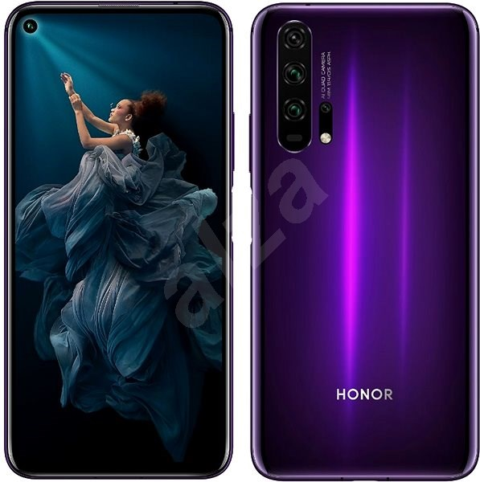
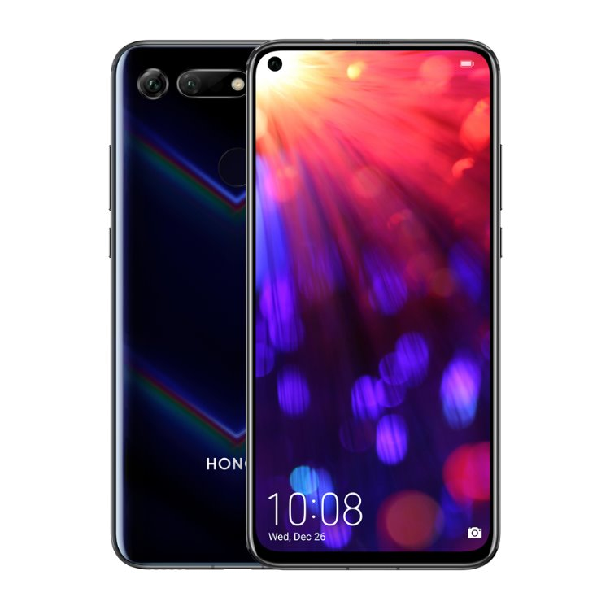
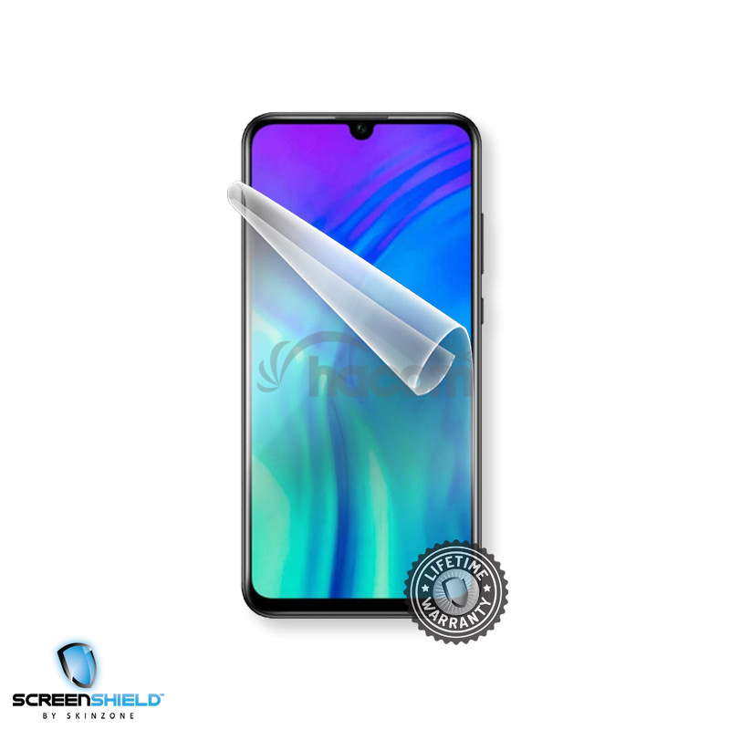
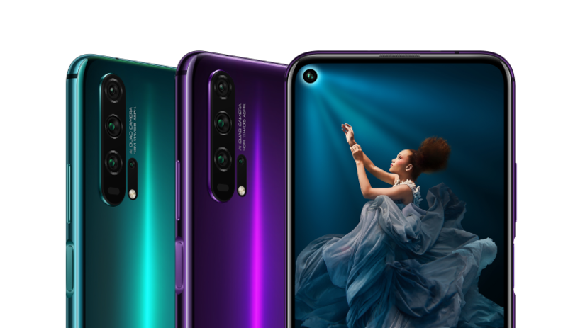
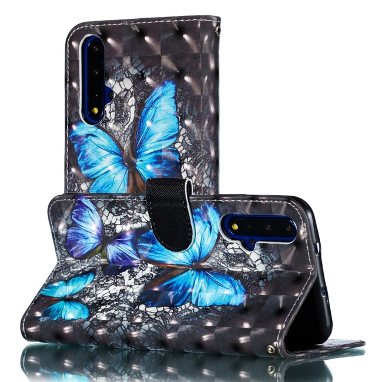

Novinka zaujme kvalitným spracovaním a mimoriadne podareným dizajnom. Na trhu by sa mala objaviť aj čierna verzia, my sme však dostali príležitosť vyskúšať trochu extrovertnejšiu modrú. Aj ona mení svoj odtieň podľa uhlu dopadu okolitého svetla, páči sa mi však, že je oveľa tmavšia než na modeloch Huawei P30 alebo P30 Pro. Pochváliť musím tiež solídny kovový rám, USB-C konektor a infračervený vysielač pre ovládanie domácej elektroniky namiesto diaľkových ovládačov. Je však zvláštne, že som v systéme nenašiel aplikáciu Smart Remote (Ovládač), ktorá by s ním mala vedieť pracovať. Honor ju zrejme do našej verzie firmvéru ešte nestihol implementovať.
-
Novinka
 -
Objektív
 Objektív prednej kamery nájdeme po vzore Samsungu priamo v ľavej časti obrazovky a zdá sa mi, že takto zaberá ešte menej priestoru pre ikony notifikácií v hornej lište, než kvapkovité výrezy jeho predchodcov. Naopak, kritizovať by som mohol chýbajúci 3,5 mm audio konektor, až príliš vystupujúci semafor trojice zadných fotoaparátov a príliš úzku čítačku odtlačkov prstov skombinovanú s vypínačom na bočnej strane. To, že sa jej plocha po priložení palca hýbe vďaka spínaču pod ňou, chce zvyk. A myslím si tiež, že senzor mohol byť radšej na chrbte alebo integrovaný priamo do displeja ako je to dnes už čoraz častejšie. Zabudnite tiež na zvýšenú vodeodolnosť a slot pre pamäťové karty. V zásuvke na ľavej strane je miesto iba pre dvojicu SIM kariet.
-
Dizajn
 Dizajn je teda parádny, no z výbavy odhaliteľnej na prvý pohľad až tak nadšený nie som. Veľký 6,26-palcový displej naopak môže konkurovať aj tým najdrahším mobilom na trhu. Full HD+ rozlíšenie 1080 x 2340 b. je dostatočne jemné, jeho kontrast aj farby špičkové a IPS technológia príjemnou alternatívou pre prípad, že z nejakého dôvodu nefandíte AMOLED-om v Samsungoch. Zaoblené rohy sú navyše príkladne natiahnuté takmer až do úplných rohov konštrukcie.
-
Zobrazenia
 V nastaveniach Zobrazenia sa dá zväčšiť alebo zmenšiť text, doladiť teplota farieb a zvoliť medzi Jasným a Normálnym režimom displeja. Jasný prináša spomínaný parádny efet, pri normálnom sú biele plochy výrazne viac žlté, no pre niekoho zas príjemnejšie pre oči. Samozrejme, ešte väčší efekt bude mať režim Ochrany zraku, ktorý si môžete vytiahnuť medzi rýchle prepínače Wi-Fi, Bluetooth, prisvetľovacej baterky, letového režimu a ďalších do hornej lišty. Z tých netradičnejších funkcií tu spomeniem nahrávanie obrazovky vo forme videa (aj keď s nižším rozlíšením či Ultra úsporný režim, ktorý ponechá aktívne len graficky veľmi jednoduché prostredie a sprístupní maximálne šesť vopred vybraných aplikácií pre maximálne šetrenie energie.
-
Wi-Fi
 Časť používateľov poteší aj podpora pre VoLTE a VoWi-Fi, teda volania cez Wi-Fi v miestach, kde je veľmi zlý mobilný signál. Východzia morská tapeta dokonale ladí z modrou farbou telefónu, pozadie si však, samozrejme, môžete kedykoľvek zmeniť. Po zoštipnutí ikon si môžete ich mriežku na domácej obrazovke zahustiť až na 5 x 6, čo je podľa mňa výrazne prehľadnejšie. No a výber medzi štandardným štýlom domácej obrazovky a zásuvkou určuje, či nájdete všetky nainštalované aplikácie priamo na domácej obrazovke, alebo v tradičnom systémovom menu.